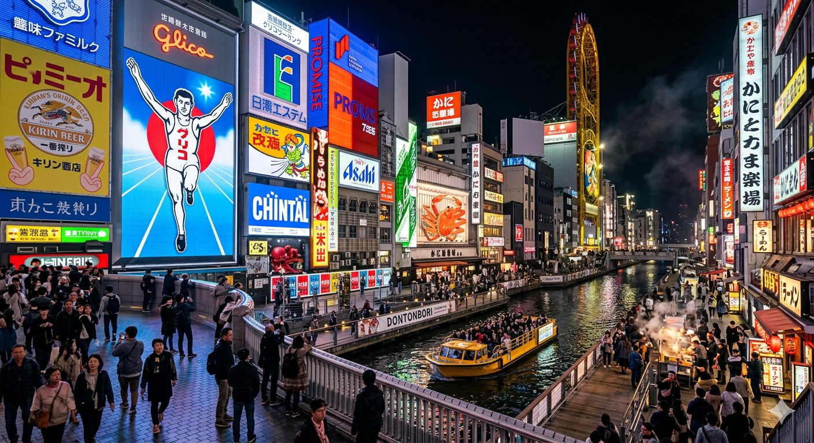

AI 生成意境圖📜 歷史背景與深度介紹
道頓堀位於大阪難波地區，是大阪最具代表性的美食與娛樂中心。自江戶時代由安井道頓開鑿運河以來，這裡歷經四百年的演變，從當年的劇場娛樂重鎮，蛻變為如今霓虹燈火璀璨、巨型看板爭奇鬥豔的不夜城。
這裡不僅是大阪「吃到倒（Kuidaore）」飲食文化的精神象徵，更是每位遊客造訪大阪時，體驗最純粹關西熱情與繁華的首選地標。
✨ 參觀三大不容錯過亮點
- 固力果跑者大招牌： 位於戎橋旁，這座擁有歷史的巨大看板是大阪的象徵。夜幕低垂時，炫目的 LED 燈光映照在運河水面，是絕佳的拍照聖地。
- 關西王道美食大會串： 在這條街上，你可以輕易找到大阪最正宗的章魚燒、串炸、拉麵與壽司。每一個轉角都是讓人垂涎三尺的美食風景。
- 道頓堀水上觀光船： 建議體驗搭乘觀光船巡航運河，在專業導覽員的解說下，用最悠閒的視角欣賞兩岸炫目的霓虹廣告，感受大阪獨有的城市魅力。
💡 旅遊小貼士
道頓堀的精華在於「夜景」，非常建議將行程排在傍晚或晚上。此處與心齋橋緊密相連，建議採「下午逛街採購，晚上享受美食」的組合規劃。由於這裡遊客眾多，若想嘗試知名餐廳，建議避開用餐尖峰時段或提前預訂。